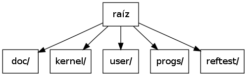

Si bien la parte más importante de Zafio está escrita en C, en realidad, el proyecto también se compone de archivos con código assembly de x86, scripts de utilidad y de configuración de herramientas, archivos binarios y documentación. Todo estos archivos están organizados en una estructura de directorios que facilita su búsqueda.
Observemos una síntesis de la estructura de directorios del proyecto:

| Directorio | Contenido |
|---|---|
| raíz | representa la base de la estructura de directorios. Además de contener al resto de los directorios, posee archivos de alcance global en el proyecto. |
| doc/ | contiene los fuentes de la documentación y algunas utilidades para construirla. |
| kernel/ | posee los encabezados y el código del kernel, y además alberga los archivos objeto resultantes de su compilación. |
| user/ | es análogo a kernel/, sólo que para código de usuario. |
| progs/ | contiene ejecutables que Zafio puede ejecutar una vez cargado. |
| reftest/ | es el directorio en el que se encuentra nuestro entorno de pruebas de referencia para el kernel. |
Dado que entendimos que nuestro foco principal estaría puesto en los problemas del sistema operativo en sí y no tanto en su carga, y dada la vasta cantidad de bootloaders disponibles, optamos por no emplear trabajo en escribir uno.
Decidimos que nuestro kernel sea cargado por un bootloader compatible con la especificación Multiboot [Multiboot]. La especificación nos pareció razonable y relativamente sencilla, y existen implementaciones estables de la misma. Además, la especificación nos asegura algunas características interesantes que tendrán los bootloaders, como la obligación de prepararnos un estado inicial en modo protegido con la gate A20 activada y la capacidad de brindarnos información sobre la memoria disponible, entre otras.
Nota
Decidimos utilizar GRUB (“Legacy”) como nuestro bootloader de referencia, aunque nuestro sistema operativo debería poder ser arrancado por cualquier bootloader que cumpla la especificación Multiboot [Multiboot].
En el archivo loader.S se encuentra el header Multiboot. Este header nos permite indicarle al bootloader que requerimos información de la memoria disponible, aunque puede usarse para especificarle también otros pedidos.
En ese mismo archivo se encuentra el punto de entrada de nuestro kernel. El código en loader.S se ocupa, luego de silenciar las interrupciones, de cargar una GDT para el sistema y cargar los registros de segmento. Esta GDT será la GDT definitiva del sistema. Consta de dos segmentos de código y dos segmentos de datos; uno para cada nivel de privilegio que usamos en el kernel (0 y 3). Además posee una entrada que será utilizada para el descriptor de TSS del sistema.
Luego se encarga de establecer el stack pointer de manera que pueda utilizarse el stack del kernel y sea posible realizar llamadas a código C. Una vez hecho esto, llama a tres funciones de C que se encargan de:
Ahora sí puede activarse la paginación de memoria. El mapa de memoria virtual ahora tiene 4MB con identity-mapping al principio (para poder seguir ejecutando el código en loader.S con normalidad) y toda la memoria que el kernel mínimamente va a requerir ubicada por encima de los 3GB en el espacio de direcciones virtual (higher half).
Ya es tiempo de actualizar el stack pointer y saltar a código de C cuyas direcciones de reubicación apuntan a memoria alta.
Una vez en memoria alta, comienza la ejecución de la función cmain(). Esta función simplemente inicializa los diferentes módulos usando las funciones vm_init(), idt_init() y sched_init(). Esta última, una vez llamada, nunca devolverá el control, ya que dará paso a la ejecución de las tareas.
Cuando cmain() llama a vm_init() comienza la inicialización del módulo encargado del manejo de memoria.
Lo primero que se hace es actualizar el registro gdtr que alberga la dirección lineal de la GDT. Como queremos usar la dirección virtual en memoria alta de la GDT, necesitamos modificar este registro para no depender más de las referencias a memoria baja. Una vez hecho esto, ya podemos quitar el identit-mapping de los primeros 4MB de la memoria virtual.
Lo segundo que hacemos es, en pocas palabras, avisarle a nuestro manejador de memoria que tiene que asumir que la memoria que está utilizando el kernel está reservada, y que no puede utilizarla como si estuviera libre para, por ejemplo, alojarla como memoria dinámica para algún subsistema del kernel.
Por último, se definen los valores límite para el heap, es decir, el espacio de memoria virtual a utilizar para satisfacer las futuras necesidades de memoria de los distintos subsistemas del kernel.
idt_init() se encuentra en idt.c y se encarga de inicializar el módulo de manejo de interrupciones.
Su primer tarea es escribir todos los descriptores en la IDT para las interrupciones que se manejarán. Las rutinas que se corresponden con cada entrada en la IDT son generadas en kernel/src/idt_handlers.S. Estas rutinas se encargan de guardar el estado del código en ejecución, y luego llaman a una función común, llamada idt_handle() pasándole a este el índice en la IDT de la interrupción ocurrida, un código de error si existiera y el estado guardado.
De allí en más, idt_handle() es quien se encarga de delegar el manejo de la interrupción en rutinas de servicio, escritas en C, debidamente registradas a través de register_isr().
Una vez que idt_init() escribió la IDT y registró algunas rutinas de servicio (las no registradas se manejan con una rutina de servicio por omisión), entonces ya puede dar aviso al procesador de que tiene la IDT lista.
Por último, configura los PIC y desenmascara sólo las interrupciones de hardware que le interesarán al kernel.
sched_init() es la función que inicializa el módulo de scheduling. Básicamente, se ocupa de crear una nueva tarea, conocida como init, y agregarla a la lista de tareas en ejecución.
Luego, se activan las interrupciones y se da paso a la ejecución de la tarea init.
La tarea init es la primera tarea que se carga en Zafio. Su función es la de crear otras tareas.